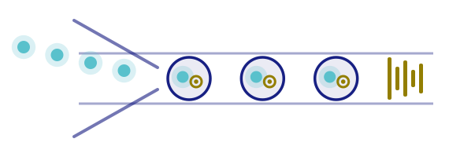

Sesión 03 · Martes 25 de agosto de 2026
De FASTQ a matriz
Bioinformática y Estadística 3 · Licenciatura en Ciencias Genómicas
ENES Juriquilla, UNAM · Semestre 2027-1
Luis Alberto Meza Cova (30 min)
José Antonio Ovando Ricárdez (90 min)
Yalbi Itzel Balderas Martínez (Comandos y acceso al clúster)
Laboratorio de Biología Computacional · INER

Reconstruir el camino que va de las lecturas crudas a la matriz de cuentas, comprendiendo qué hace un cuantificador y por qué contar moléculas no es contar lecturas; y ejecutar ese proceso en un entorno de cómputo de alto rendimiento siguiendo buenas prácticas.
Cómo está armada
Sesión práctica (bloque continuo, día 1) de 120 minutos.
Tres líneas, y seguimos. La guía completa está en el repositorio del curso.
source?source ejecuta un guion dentro de tu sesión actual, no en una aparte. Por eso lo que define se queda contigo al terminar.
setup-curso.sh deja tres cosas listas:
| Qué deja | Para qué sirve |
|---|---|
| Módulos de R 4.6.0 y Python | las prácticas de las sesiones siguientes |
Cell Ranger en el PATH |
escribir cellranger sin la ruta completa |
$REFERENCIA y $DATOS |
atajos a la referencia GRCh38 y a los FASTQ |
Advertencia
Las variables viven en la sesión, no en el disco. Hay que repetir el source cada vez que abras una terminal nueva: si cellranger responde command not found, es eso y no un problema de red.
🧪 Llegaron los datos del experimento
Un laboratorio acaba de terminar un experimento de single-cell RNA-seq con 10x en PBMC de dos condiciones.
🎯 La pregunta ya está definida: qué tipos celulares hay y cuáles cambian de una condición a la otra.
🧬 El centro de secuenciación acaba de entregar los archivos .fastq.gz.
💬 «Perfecto, ya tenemos los datos. ¿Empezamos a buscar las diferencias entre las células?»
💻 Sobre la mesa solo hay FASTQ. 🤔 ¿Qué tiene que pasar antes de poder responder la pregunta biológica?
Antes de avanzar, recuperemos tres ideas clave:
➡️ Ahora sigamos el camino desde los FASTQ hasta la matriz de expresión.
Al final del procesamiento obtenemos una matriz de cuentas:
| Gen | célula_1 | célula_2 | célula_3 |
|---|---|---|---|
| CD3E | 0 | 7 | 2 |
| MS4A1 | 4 | 0 | 0 |
| LYZ | 0 | 1 | 31 |
🤔 El 7 de CD3E en la célula_2
No «qué significa». De dónde salió.
La matriz de cuentas busca aproximarse al número de moléculas originales, no al número de lecturas generadas por el secuenciador.
Para llegar a una sola celda de la matriz, un cuantificador necesita resolver tres preguntas:
El valor final aparece al combinar:
célula + gen + moléculas únicas
Nota
Distintas herramientas pueden resolver estos pasos de maneras diferentes.
Primero entendamos qué significa asignar una lectura a un gen.
Después de secuenciar obtenemos millones de fragmentos de ADN representados como secuencias.
Pero una secuencia por sí sola no nos dice directamente qué gen estamos observando.
La pregunta es:
¿En qué región de la referencia encaja mejor esta secuencia?
Alinear consiste en buscar dónde puede ubicarse una secuencia obtenida durante la secuenciación dentro de una secuencia de referencia.
No todas relacionan las lecturas con la referencia de la misma manera.
| Alineamiento | Pseudoalineamiento | |
|---|---|---|
| Qué busca | la posición en el genoma | a qué transcritos es compatible |
| Detalle | conserva la posición | la evita si no hace falta |
| Ejemplos | Cell Ranger, STARsolo | alevin-fry, kallisto | bustools |
| Costo | más tiempo y memoria | mucho más rápido |
| Sirve para | variantes, splicing, intrones | contar por gen |
STAR/STARsolo: Dobin et al. (2013), Kaminow et al. (2021) · alevin-fry: He et al. (2022) · kallisto: Melsted et al. (2021)
Ya podemos relacionar una lectura con un gen, pero todavía necesitamos saber a qué célula pertenece.
En tecnologías de gotas, cada célula queda asociada a un código de barras propio, que en la literatura y en la salida de Cell Ranger aparece como cell barcode.
El código de barras funciona como una etiqueta
Lecturas con el mismo código de barras se agrupan como provenientes de la misma gota.
Ahora podemos ubicar cada pieza dentro de los archivos que recibimos de la secuenciación:
| Pieza | ¿Dónde está? | ¿Para qué se utiliza? |
|---|---|---|
| 🏷️ Código de barras | Lectura 1 | Identifica de qué célula proviene la señal y ayuda a definir la columna |
| 🔢 UMI | Lectura 1 | Permite distinguir moléculas únicas y evitar contar varias veces copias de PCR |
| 🧬 Inserto | Lectura 2 | Se relaciona con la referencia para identificar el gen y definir la fila |
Para construir una cuenta necesitamos combinar tres cosas:
célula + gen + molécula única
Advertencia
Los nombres no son decorativos: el cuantificador los usa para saber cuál es cuál. Renombrar un FASTQ «para ordenar» es una forma clásica de romper la corrida.
..._R1_...fastq.gz — código de barras + UMI. Corta..._R2_...fastq.gz — el inserto. La que se alinea..._I1_...fastq.gz — índice de muestra, si vieneEn esta sesión usaremos Cell Ranger, el conjunto de herramientas desarrollado por 10x Genomics para procesar datos generados con sus plataformas de single-cell.
Cell Ranger no se ejecuta siempre de la misma manera.
El pipeline que utilizamos depende del tipo de experimento y de lo que queremos procesar.
| Pipeline | ¿Para qué se utiliza? |
|---|---|
cellranger count |
🧬 Gene Expression y algunas librerías Feature Barcode |
cellranger multi |
🧪 Experimentos con múltiples librerías o configuraciones más complejas |
cellranger vdj |
🧫 Librerías de receptores TCR/BCR (V(D)J) |
cellranger aggr |
🔗 Combinar resultados de varias corridas previamente procesadas |
cellranger reanalyze |
🔄 Repetir análisis secundarios sobre resultados existentes |
¿Con cuál deberíamos trabajar para nuestro experimento de PBMC?
cellranger count: ¿qué necesita para comenzar?Para ejecutar la cuantificación debemos indicarle a Cell Ranger dónde están los datos y cómo queremos ejecutar el análisis.
# $DATOS y $REFERENCIA los define setup-curso.sh. $DATOS apunta YA a la
# carpeta del dataset: dentro están las dos bibliotecas gex_1 y gex_2.
cellranger count \
--id=pbmc_5k \
--transcriptome=$REFERENCIA \
--fastqs=$DATOS/..._gex_1,$DATOS/..._gex_2 \
--sample=..._gex_1,..._gex_2 \
--create-bam=false \
--localcores=8 \
--localmem=30💡 No se trata de memorizar el comando, sino de poder responder: ¿dónde están mis FASTQ? ¿dónde está mi referencia? ¿qué muestra proceso y con qué recursos?
--create-bam
Obligatorio desde Cell Ranger 8: sin él, aborta antes de empezar. Lo ponemos en false, y eso ahorra decenas de GB por persona.
--sample
Compara contra el prefijo del nombre del archivo. Si no coincide, falla con «no input FASTQs were found» — y aquí son dos bibliotecas.
cellranger count?Cuando el procesamiento termina correctamente, Cell Ranger genera una carpeta:
Nota
No aparece possorted_genome_bam.bam porque pedimos --create-bam=false. Con BAM, cada corrida sumaría decenas de GB, multiplicado por el grupo entero.
| Archivo | Qué trae |
|---|---|
web_summary.html |
el informe de la corrida: cuántas células, cuánto mapeó |
filtered_feature_bc_matrix/ |
la matriz que Cell Ranger llamó «células» |
raw_feature_bc_matrix/ |
todos los códigos de barras, gotas vacías incluidas |
Importante
Con esos tres se pasa de la cuantificación al control de calidad. Los demás —analysis/, cloupe.cloupe— son atajos que aquí no usamos.
Durante esta sesión trabajaremos con un dataset público de 10x Genomics:
gex_1 y gex_2| Recurso | Dónde | Uso |
|---|---|---|
| 🧬 Lecturas | $DATOS |
Solo lectura |
| 📚 Referencia | $REFERENCIA — GRCh38, 11 GB |
Solo lectura |
| 👤 Tu carpeta | /mnt/data/bioinfo3/TUUSUARIO |
Lectura y escritura |
Importante
Los FASTQ y la referencia son compartidos: una sola copia para el grupo, 50 GB —la referencia sola son 11. No se modifican y no se copian a tu carpeta.
Todo lo que generes va a tu carpeta en /mnt/data, nunca al $HOME.
Advertencia
El $HOME tiene una cuota de 5 GB. La salida de cellranger count no cabe ahí, y el trabajo muere con Disk quota exceeded a media corrida.
Hoy trabajaremos con los FASTQ reales del dataset de PBMC en dos etapas:
| Etapa | Qué haremos | Objetivo |
|---|---|---|
| 3.1 🔎 Inspección de FASTQ | Explorar R1 y R2 desde la terminal | Reconocer la estructura de las lecturas |
| 3.2 ⚙️ Cell Ranger | Preparar y enviar cellranger count con sbatch |
Iniciar la cuantificación del dataset |
La lógica de la práctica
Primero entendemos qué contienen los archivos.
Después dejamos que Cell Ranger los procese.
Antes de ejecutar Cell Ranger, vamos a revisar directamente los archivos de PBMC.
Se entrega: los comandos usados y el número estimado.
Nota
Los FASTQ están comprimidos (.fastq.gz).
Los inspeccionaremos directamente desde la terminal sin descomprimirlos en disco.
Una vez inspeccionados los FASTQ, utilizaremos Cell Ranger para iniciar su procesamiento.
sbatch y anotar el identificador del trabajo🚫 Nunca en el nodo de acceso
Al entrar por SSH caes en el nodo de acceso: 4 núcleos y 15 GB para todas las personas conectadas. Un cellranger ahí deja el clúster inservible para el grupo entero.
Es la norma de convivencia del clúster, no una recomendación. Todo lo que calcula se manda a la cola con sbatch.
Pide la memoria
Sin --mem explícito, SLURM te da 2 GB por núcleo. Con 8 núcleos son 16 GB, y cellranger count no cabe ahí.
El source va dentro del guion
El nodo de cómputo no hereda tu entorno: ni las variables, ni el PATH, ni los módulos. Hay que cargarlo allá.
Nota
La cuantificación tarda horas: se envía hoy y se recoge el jueves. Hay una corrida ya calculada en la carpeta compartida por si un envío falla.
| Recurso | Si pedimos muy poco |
|---|---|
| 🧠 Memoria (RAM) | El proceso puede terminar por falta de memoria |
| ⏱️ Tiempo | El gestor detiene el trabajo al alcanzar el límite solicitado |
| ⚙️ Núcleos (CPU) | El análisis puede tardar más de lo necesario |
La idea no es pedir «lo máximo», sino pedir lo necesario con margen
El log del gestor de colas es el primer lugar que hay que revisar. SLURM deja dos archivos por trabajo, y el número que llevan es el identificador que anotaste:
| Archivo | Qué trae |
|---|---|
*-12345.out |
lo que el programa imprimió mientras corría |
*-12345.err |
los errores, y la causa real de la muerte del proceso |
Importante
Un trabajo que muere por memoria no lo dice en el .out: lo dice el gestor, en el .err. Por eso se leen los dos, y se empieza por el .err.
Todos los equipos trabajarán con Cell Ranger durante la práctica.
Ahora cada equipo investigará también tres alternativas:
Nota
No es necesario instalar ni ejecutar estas herramientas.
La actividad consiste en entender cómo resuelven el mismo problema que estamos resolviendo con Cell Ranger. Cada equipo llena su marco del tablero.
Los 4 equipos comparan las tres herramientas. Para cada una, seis preguntas:
🧭 ¿Qué estrategia utiliza?
Alineamiento, pseudoalineamiento u otro enfoque.
📦 ¿Qué necesita como entrada?
FASTQ, referencia, transcriptoma, barcodes, etc.
📊 ¿Qué produce?
Matriz de cuentas y principales archivos de salida.
⚡ ¿Qué ventaja ofrece?
Velocidad, flexibilidad, uso de memoria u otras ventajas.
⚠️ ¿Qué limitación o decisión implica?
🔄 ¿En qué se diferencia de Cell Ranger?
Cada equipo deja su tabla en el tablero. Antes de cerrar, las tres preguntas que rematan la sesión:
Importante
Ninguna es «la correcta». Cada una hace supuestos distintos, y la matriz que produce los arrastra hasta el final del análisis. Hoy basta con que la pregunta quede planteada: la respuesta empieza el jueves.
Smart-seq2. Un archivo por célula. Sin UMI.
¿Sirve el mismo comando?
Voten en la encuesta antes de que se discuta.
Importante
No es que el conjunto de datos esté mal. Es que la unidad que se cuenta es otra, y por eso la normalización y el análisis posterior también cambian.
| Cómo se detecta | Porcentaje de mapeo bajísimo, o genes que no existen |
| Cómo se resuelve | Verificar la referencia antes de correr. El resumen web de Cell Ranger reporta el porcentaje de lecturas mapeadas: si está muy por debajo de lo esperado, se detiene y se revisa. |
| Cómo se detecta | El nodo de acceso se satura y afecta a todo el clúster |
| Cómo se resuelve | Siempre sbatch. Es además la norma de convivencia del clúster, no solo una buena práctica técnica. |
| Cómo se detecta | El trabajo muere sin explicación clara horas después |
| Cómo se resuelve | Estimar la memoria antes y pedir margen. Leer el archivo de salida del gestor, que registra la causa real de la muerte del proceso. |
| Cómo se detecta | Sobrestimación de la expresión de genes muy amplificados |
| Cómo se resuelve | La deduplicación por identificador molecular único existe precisamente por esto. Si el conjunto de datos no tiene UMI (Smart-seq2), el conteo se interpreta distinto. |
Advertencia
Guarden el identificador de su trabajo. Sin él, el jueves no saben cuál es el suyo.
Análisis de single-cell RNA-seq · Bioinformática y Estadística 3 · LCG, ENES Juriquilla UNAM · 2027-1